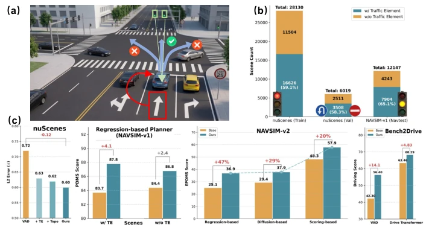
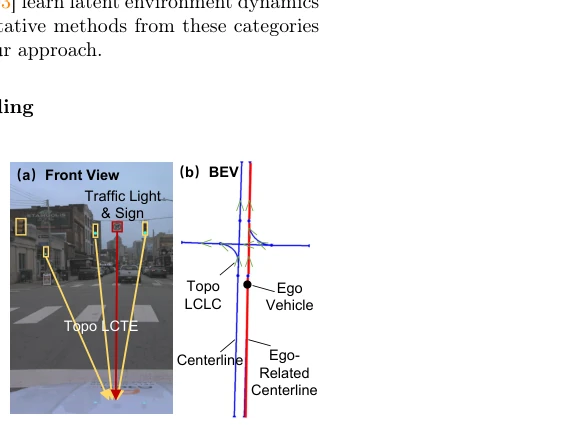
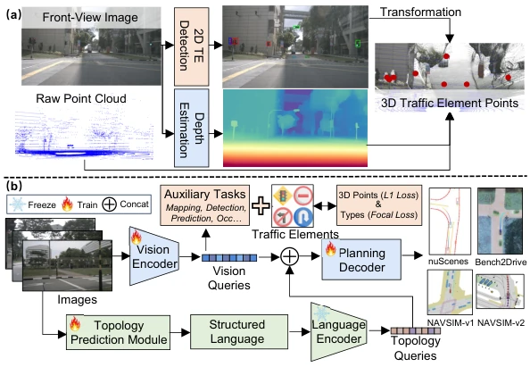
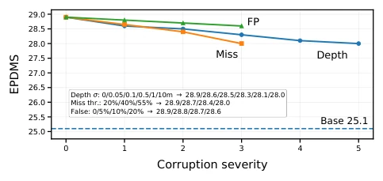
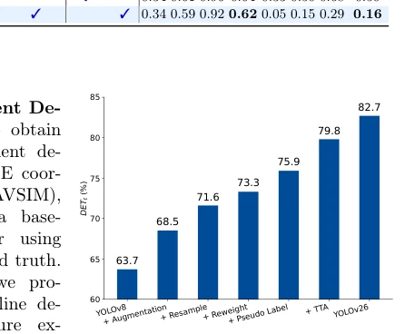

This paper undertakes a "hardcore endeavor" to "restore common sense". End-to-end autonomous driving research has been highly competitive for so long, yet mainstream methods still focus intensely on dynamic vehicles and pedestrians, as if traffic lights and road signs were nonexistent. The author team points out precisely: TE (Traffic Elements) is not a corner case, but the core of rules, directly constraining the actionable action space. Although "plug-and-play" sounds like marketing jargon, experiments indeed prove consistent superiority on VAD, Orion, and even Diffusion models, with NAVSIM-v2 even achieving a new SOTA. However, reliance on the quality of external detectors is a potential risk; if TE detection fails, the planner might be slower than driving blindly, and although the language-encoded topology is beneficial, it increases inference latency.
Existing E2E research primarily focuses on dynamic participants (vehicles, pedestrians) [32, 40], overlooking the regulatory role of Traffic Elements (TE). Although TE is ubiquitous in real-world scenarios (59.1% of scenes in nuScenes contain TE), public datasets lack structured annotations [4, 5]. The community lacks systematic research quantifying the impact of TE on E2E performance, resulting in models often making topologically feasible but rule-violating decisions. Existing works mostly rely on HD maps or occupancy networks, lacking explicit modeling of TE, making it difficult to ensure rule compliance. Furthermore, modern E2E system architectures vary significantly, making conclusions from single methods hard to generalize, necessitating a unified infrastructure to verify TE value.

Fig. 1: TE-Aware End-to-End Planning. (a) In complex intersections, correct planning requires recognizing rule-critical traffic elements to avoid topologically plau- sible but rule-violating maneuvers. (b) Traffic elements are pervasive: across three benchmarks, over 55% of scenes contain at least one traffic element. (c) Leveraging traffic elements (and topology) yields consistent improvements across representa- tive end-to-end planners in both open-loop and closed-loop evaluations.
The overall process consists of three steps. First, construct a 3D TE dataset, locating TE center points through 2D detection + monocular depth + LiDAR geometric fusion to address data scarcity issues. Second, add an auxiliary 3D TE detection task during training, using L1 loss for localization and Focal loss for classification, preventing gradients from being overwhelmed by the background and ensuring the network allocates capacity to sparse TE. Finally, convert topology relationships (lane-TE, lane-lane) into structured language sequences, encoded by BERT and then concatenated with BEV queries. The innovation lies in the language-encoded topology being superior to GCN, handling heterogeneous nodes better; additionally, Ego-centric filtering reduces noise, avoiding interference from irrelevant information. This design achieves plug-and-play with minimized architecture modification.

Fig. 2: Definitions of driving topologies. (a) LCTE topology mapping traffic elements (light/sign) to the ego-lane in FV. (b) BEV rep- resentation of centerlines, ego-related centerlines, and LCLC topology.

Fig. 3: (a) Pipeline for 3D traffic element extraction. We first perform 2D traffic- element detection and monocular depth estimation on the FV image, then combine them and LiDAR geometry to localize each traffic element as a 3D center point (•). (b) Overview of our method. Multi-view images are encoded into vision queries and enhanced by an auxiliary 3D traffic element detection task. In parallel, predicted topological adjacency matrices are formatted into structured language and processed by a frozen language encoder. The resulting topology queries are concatenated with the BEV queries to guide the planning decoder in generating the ego-vehicle trajectory.
Evaluated on four benchmarks: nuScenes, NAVSIM-v1/v2, and Bench2Drive. Compared against six baseline categories including VAD, Orion, LTF, DiffusionDrive, etc. Results show TE perception improves performance across all paradigms; on NAVSIM-v2, EPDMS improvement is significant, partially surpassing human driving. Ablation studies indicate 3D representation outperforms 2D, language encoding outperforms GCN, and exhibits robustness to perception noise. Specifically, LTF+Ours improves by 15% on NAVSIM-v2, and DrivoR improves by 20%. Additionally, efficiency metrics decrease slightly, indicating the model is more conservative and compliant, rather than aggressively pursuing efficiency.

Fig. 5: Robustness analysis on NAVSIM-v2 with LTF. We corrupt the predicted TE representation at inference time by adding TE depth noise, randomly dropping TE detections, or injecting false-positive TE predictions. The performance decreases smoothly under stronger corruption while remaining above the LTF baseline, indicat- ing robustness to moderate upstream TE perception noise.

Fig. 6: Stepwise performance im- provements of our traffic element detector on the OpenLane-V2 validation set, evalu- ated by the DETt metric.